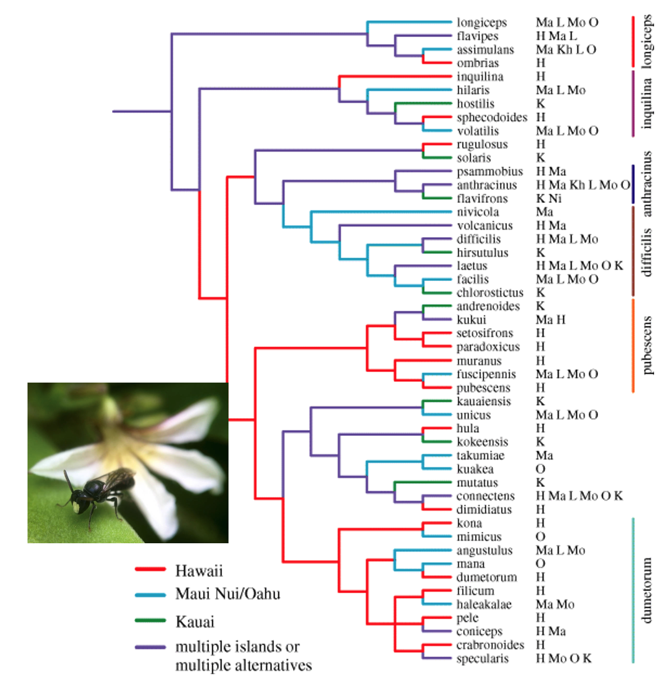
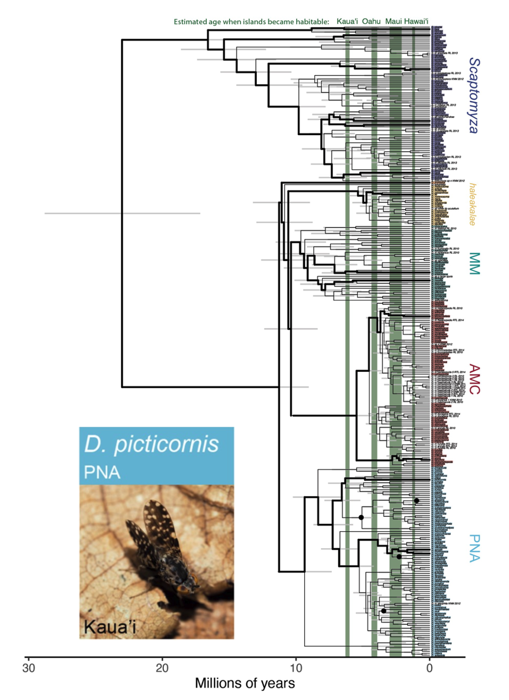
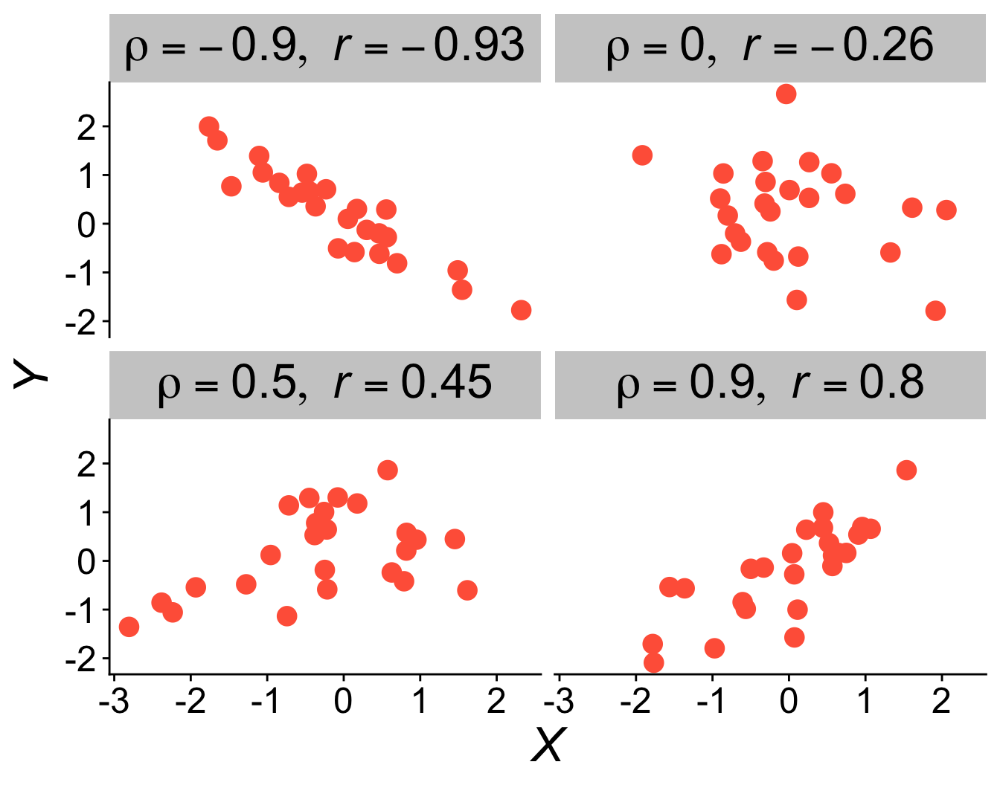
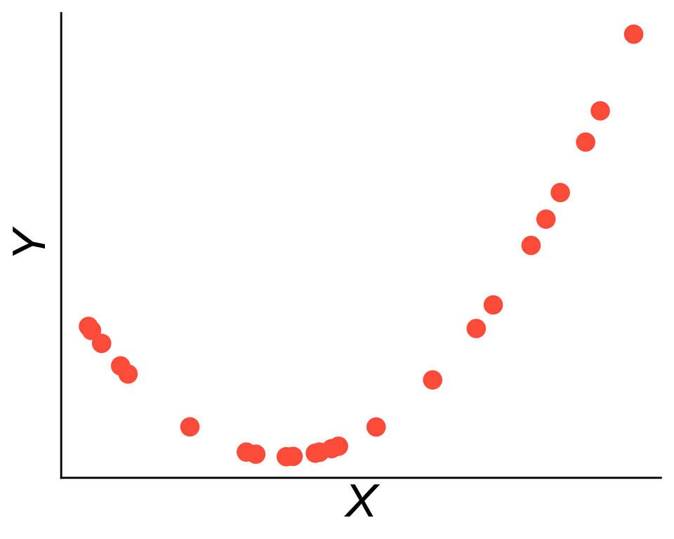
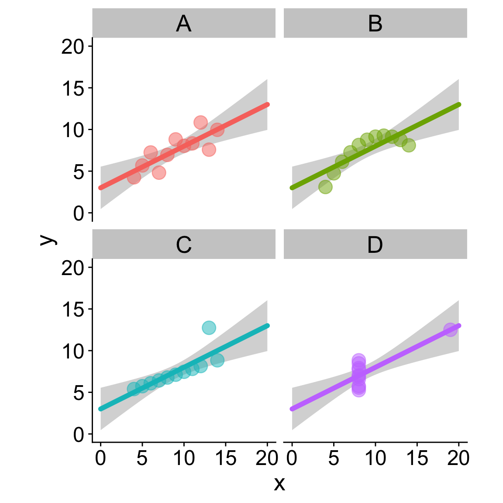
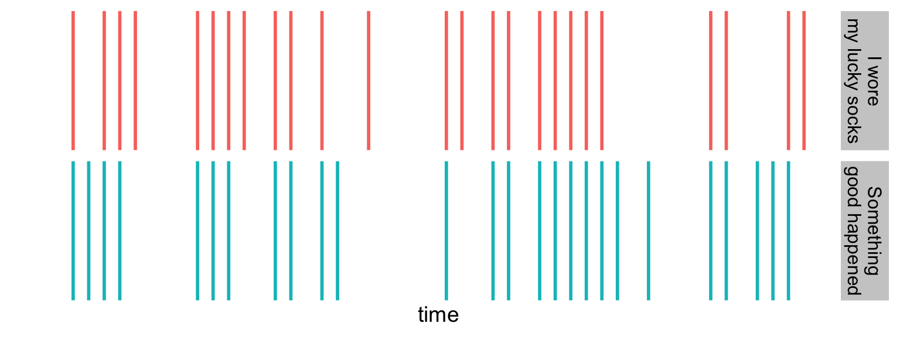
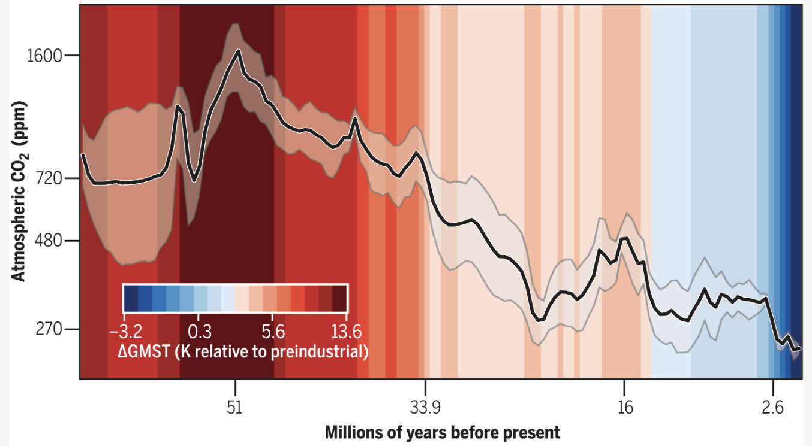
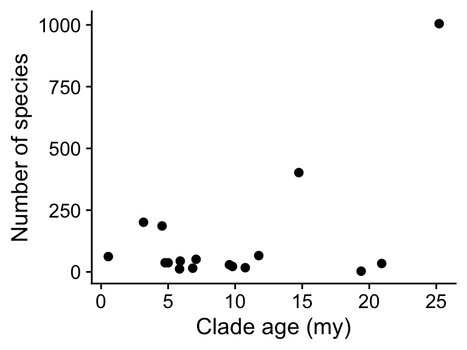

Hylaeus bees

Native Drosophila

Looks like it…a question for correlation
When one variable goes up, the other goes up
…or…
When one variable goes up, the other goes down
More fancy sounding:
How well can we predict one variable from another?
To the “whiteboard”
Sample correlation coefficient
\[ r = \frac{\sum_i (X_i - \overline{X}) (Y_i - \overline{Y})}{\sqrt{\sum_i (X_i - \overline{X}) ^ 2 \sum_i (Y_i - \overline{Y}) ^ 2}} \]
is an estimate of population correlation coefficient
\[ \rho = \frac{\sum_i (X_i - \mu_X) (Y_i - \mu_Y)}{\sqrt{\sum_i (X_i - \mu_X) ^ 2 \sum_i (Y_i - \mu_Y) ^ 2}} \]
The correlation coefficient is bound between -1 and 1

Looking at the equation for estimated correlation:
\[ r = \frac{\sum_i (X_i - \overline{X}) (Y_i - \overline{Y})}{\sqrt{\sum_i (X_i - \overline{X}) ^ 2 \sum_i (Y_i - \overline{Y}) ^ 2}} \]
We see a big summation in the numerator. Pause and Think: what distribution do we expect for summations?
Looking at the equation for estimated correlation:
\[ r = \frac{\sum_i (X_i - \overline{X}) (Y_i - \overline{Y})}{\sqrt{\sum_i (X_i - \overline{X}) ^ 2 \sum_i (Y_i - \overline{Y}) ^ 2}} \]
We see a big summation in the numerator. Pause and Think: what distribution do we expect for summations?
A Normal Distribution!
Because we are again estimating the standard deviation of the sampling distribution of \(r\), we have to use a t distribution
State null and alternative hypotheses
Calculate test statistic
Identify null distribution
Calculate \(P\)-value
Decide:
\(H_0\) the true population correlation is \(\rho = 0\) (most common null)
\(H_A\) the true population correlation is not 0
\[ r = \frac{\sum_i (X_i - \overline{X}) (Y_i - \overline{Y})}{\sqrt{\sum_i (X_i - \overline{X}) ^ 2 \sum_i (Y_i - \overline{Y}) ^ 2}} \] Or in R:
We figured out it’s a t.
degrees of freedom = \(n - 1 - (\text{number of parameters estimated})\)
so \(df = n - 1 - 1\)
We could use pt, but instead…
Pearson's product-moment correlation
data: hi_insect$clade_age and hi_insect$clade_richness
t = 2.4884, df = 15, p-value = 0.02507
alternative hypothesis: true correlation is not equal to 0
95 percent confidence interval:
0.08093661 0.81059406
sample estimates:
cor
0.5405529 Because \(P = 0.0251\) is less than \(\alpha = 0.05\) we reject the null
We also get the 95% confidence interval from cor.test
Pearson's product-moment correlation
data: hi_insect$clade_age and hi_insect$clade_richness
t = 2.4884, df = 15, p-value = 0.02507
alternative hypothesis: true correlation is not equal to 0
95 percent confidence interval:
0.08093661 0.81059406
sample estimates:
cor
0.5405529 Again, this comes from the fact that we can assume correlation estimates have a t distribution
Pearson's product-moment correlation
data: hi_insect$clade_age and hi_insect$clade_richness
t = 2.4884, df = 15, p-value = 0.02507
alternative hypothesis: true correlation is not equal to 0
95 percent confidence interval:
0.08093661 0.81059406
sample estimates:
cor
0.5405529 Who do we choose to memorialize?
Pearson's product-moment correlation
Not a perfect list, but some ideas:
Not a perfect list, but some ideas:
Anil Kumar Gain, Indian statistician
Not a perfect list, but some ideas:
The rank-based test for correlation works by:
Obsessed with finding “race”-based differences in “intellegence”
Deconstructing intellectual memorials will take a lot of community pressure on those who gatekeep statistics
Correlation measures linear association, you can have perfect non-linear association with low correlation
In this figure, \(r = 0.66\)

Four data sets with identical summary statistics
| data set | \(\bar{X}\) | \(\bar{Y}\) | \(s_X\) | \(s_Y\) | \(r_{x,y}\) |
|---|---|---|---|---|---|
| A | 9 | 7.5 | 3.32 | 2.03 | 0.82 |
| B | 9 | 7.5 | 3.32 | 2.03 | 0.82 |
| C | 9 | 7.5 | 3.32 | 2.03 | 0.82 |
| D | 9 | 7.5 | 3.32 | 2.03 | 0.82 |

Correlation is not causation
Seems like when I wear my lucky socks, good things happen

We don’t have a plausible mechanism where socks can affect the world
And I have done no experiment to assess causation
More \(\text{CO}_2\), more hot

We do have a plausible mechanism (absorbtion and re-radiation of heat by greenhouse gasses) which is based on experimentally-derived knowledge
We can also build models based on this plausible mechanism and show that they accurately predict past and present climate
Pause & Think
